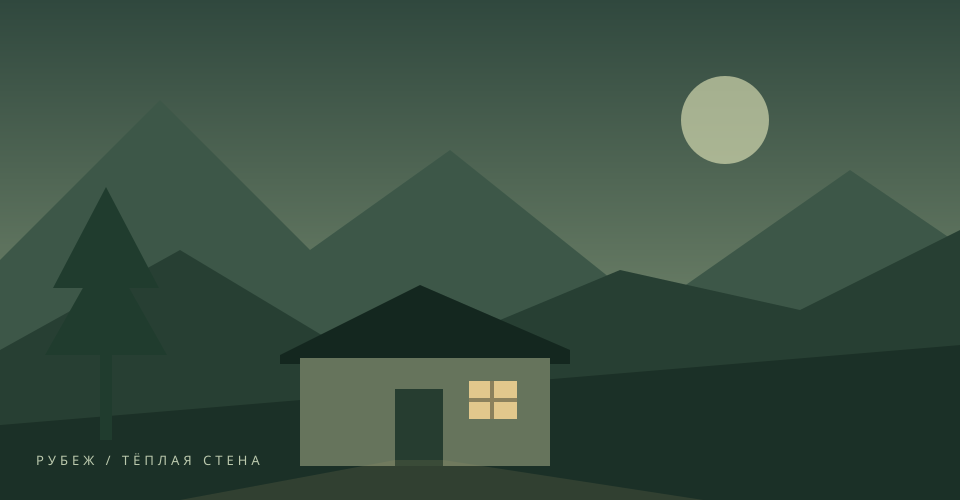

Что уже есть
Стрельба, скрытное движение, холод и усталость, отдых, верстак, собака-компаньон, разрушаемые стены и физические обломки, сохранение мира.
РУБЕЖ / ГЛАВА 01
Снаружи — холодный город.
Здесь ещё есть ради кого возвращаться.

Авторская графическая обложка, не скриншот игры.
Стрельба, скрытное движение, холод и усталость, отдых, верстак, собака-компаньон, разрушаемые стены и физические обломки, сохранение мира.
WASD — движение · мышь — обзор · ЛКМ — огонь · E — взаимодействие · C — присесть · F — фонарь · Tab — инвентарь · Esc — меню.
127 целевых headless-проверок в Godot и 7 статических тестов прошли. Графика, звук на слух, FPS и прохождение человеком ещё не проверены. Полный отчёт ↗